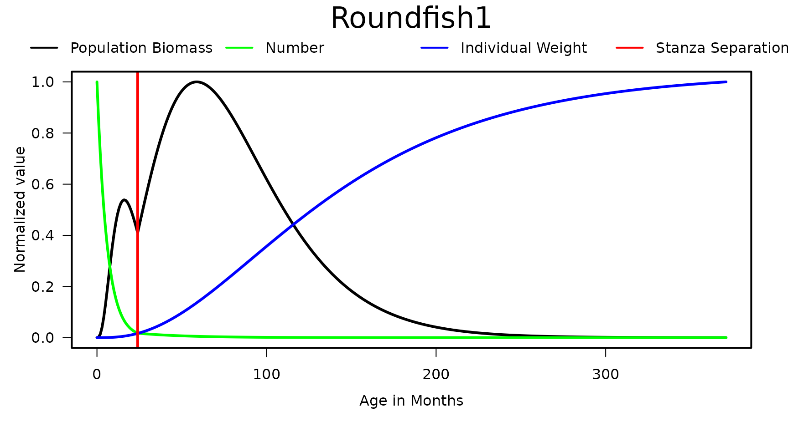

First, install Rpath as instructed in Getting Started.
R package data.table is also required to run the code in
this article.
Unlike the GUI based EwE software package, Rpath relies on a
parameter input file. This file is actually a list of several different
parameter files: model, diet, stanzas, and pedigree. Parameter files can
be created outside of R and read in using the
read.rpath.params function. This function will merge
several different flat files into an R object of the list type. A
preferred alternative is to generate the list file and populate it
completely within R. The function create.rpath.params will
generate an Rpath.param. This ensures that all of the correct columns
are present in the parameter file.
The parameter file contains all of the information you would normally enter in the input data tabs in EwE. There are 2 necessary pieces of information to generate the parameter file: the group names and their corresponding type. The types are: living = 0, primary producer = 1, detritus = 2, and fleet = 3. If your model contains multi-stanza groups then you need 2 additional pieces of information: stanza group names (include NA for those groups not in a stanza) and the number of stanzas per stanza group.
#Groups and types for the R Ecosystem
groups <- c('Seabirds', 'Whales', 'Seals', 'JuvRoundfish1', 'AduRoundfish1',
'JuvRoundfish2', 'AduRoundfish2', 'JuvFlatfish1', 'AduFlatfish1',
'JuvFlatfish2', 'AduFlatfish2', 'OtherGroundfish', 'Foragefish1',
'Foragefish2', 'OtherForagefish', 'Megabenthos', 'Shellfish',
'Macrobenthos', 'Zooplankton', 'Phytoplankton', 'Detritus',
'Discards', 'Trawlers', 'Midwater', 'Dredgers')
types <- c(rep(0, 19), 1, rep(2, 2), rep(3, 3))
stgroups <- c(rep(NA, 3), rep('Roundfish1', 2), rep('Roundfish2', 2),
rep('Flatfish1', 2), rep('Flatfish2', 2), rep(NA, 14))
REco.params <- create.rpath.params(group = groups, type = types, stgroup = stgroups)REco.params now contains a list of 4 objects: model, diet, stanzas, and pedigree. The majority of the parameters are populated with NA save those that have logical default vaules (i.e 0.66667 for VBGF_d).
The model parameter list contains the biomass, production to biomass, consumption to biomass, etc. parameters as well as the detrital fate parameters and fleet landings and discards.
| Group | Type | Biomass | PB | QB | EE | ProdCons | BioAcc | Unassim | DetInput | Detritus | Discards | Trawlers | Midwater | Dredgers | Trawlers.disc | Midwater.disc | Dredgers.disc |
|---|---|---|---|---|---|---|---|---|---|---|---|---|---|---|---|---|---|
| Seabirds | 0 | NA | NA | NA | NA | NA | NA | NA | NA | NA | NA | 0 | 0 | 0 | 0 | 0 | 0 |
| Whales | 0 | NA | NA | NA | NA | NA | NA | NA | NA | NA | NA | 0 | 0 | 0 | 0 | 0 | 0 |
| Seals | 0 | NA | NA | NA | NA | NA | NA | NA | NA | NA | NA | 0 | 0 | 0 | 0 | 0 | 0 |
| JuvRoundfish1 | 0 | NA | NA | NA | NA | NA | NA | NA | NA | NA | NA | 0 | 0 | 0 | 0 | 0 | 0 |
| AduRoundfish1 | 0 | NA | NA | NA | NA | NA | NA | NA | NA | NA | NA | 0 | 0 | 0 | 0 | 0 | 0 |
| JuvRoundfish2 | 0 | NA | NA | NA | NA | NA | NA | NA | NA | NA | NA | 0 | 0 | 0 | 0 | 0 | 0 |
| AduRoundfish2 | 0 | NA | NA | NA | NA | NA | NA | NA | NA | NA | NA | 0 | 0 | 0 | 0 | 0 | 0 |
| JuvFlatfish1 | 0 | NA | NA | NA | NA | NA | NA | NA | NA | NA | NA | 0 | 0 | 0 | 0 | 0 | 0 |
| AduFlatfish1 | 0 | NA | NA | NA | NA | NA | NA | NA | NA | NA | NA | 0 | 0 | 0 | 0 | 0 | 0 |
| JuvFlatfish2 | 0 | NA | NA | NA | NA | NA | NA | NA | NA | NA | NA | 0 | 0 | 0 | 0 | 0 | 0 |
| AduFlatfish2 | 0 | NA | NA | NA | NA | NA | NA | NA | NA | NA | NA | 0 | 0 | 0 | 0 | 0 | 0 |
| OtherGroundfish | 0 | NA | NA | NA | NA | NA | NA | NA | NA | NA | NA | 0 | 0 | 0 | 0 | 0 | 0 |
| Foragefish1 | 0 | NA | NA | NA | NA | NA | NA | NA | NA | NA | NA | 0 | 0 | 0 | 0 | 0 | 0 |
| Foragefish2 | 0 | NA | NA | NA | NA | NA | NA | NA | NA | NA | NA | 0 | 0 | 0 | 0 | 0 | 0 |
| OtherForagefish | 0 | NA | NA | NA | NA | NA | NA | NA | NA | NA | NA | 0 | 0 | 0 | 0 | 0 | 0 |
| Megabenthos | 0 | NA | NA | NA | NA | NA | NA | NA | NA | NA | NA | 0 | 0 | 0 | 0 | 0 | 0 |
| Shellfish | 0 | NA | NA | NA | NA | NA | NA | NA | NA | NA | NA | 0 | 0 | 0 | 0 | 0 | 0 |
| Macrobenthos | 0 | NA | NA | NA | NA | NA | NA | NA | NA | NA | NA | 0 | 0 | 0 | 0 | 0 | 0 |
| Zooplankton | 0 | NA | NA | NA | NA | NA | NA | NA | NA | NA | NA | 0 | 0 | 0 | 0 | 0 | 0 |
| Phytoplankton | 1 | NA | NA | NA | NA | NA | NA | NA | NA | NA | NA | 0 | 0 | 0 | 0 | 0 | 0 |
| Detritus | 2 | NA | NA | NA | NA | NA | NA | NA | 0 | NA | NA | 0 | 0 | 0 | 0 | 0 | 0 |
| Discards | 2 | NA | NA | NA | NA | NA | NA | NA | 0 | NA | NA | 0 | 0 | 0 | 0 | 0 | 0 |
| Trawlers | 3 | NA | NA | NA | NA | NA | NA | NA | NA | NA | NA | NA | NA | NA | NA | NA | NA |
| Midwater | 3 | NA | NA | NA | NA | NA | NA | NA | NA | NA | NA | NA | NA | NA | NA | NA | NA |
| Dredgers | 3 | NA | NA | NA | NA | NA | NA | NA | NA | NA | NA | NA | NA | NA | NA | NA | NA |
Each of the parameter lists are data tables (With the exception of the stanzas list which is itself a list of an integer and two data tables). Data tables are an extension of the classic data frame class. Advantages of data tables include simplified indexing which eases the process of populating the parameters. For example you can add data to a specific slot or fill an entire column.
#Example of filling specific slots
REco.params$model[Group %in% c('Seals', 'Megabenthos'), EE := 0.8]
#Example of filling an entire column
biomass <- c(0.0149, 0.454, NA, NA, 1.39, NA, 5.553, NA, 5.766, NA,
0.739, 7.4, 5.1, 4.7, 5.1, NA, 7, 17.4, 23, 10, rep(NA, 5))
REco.params$model[, Biomass := biomass]Note the use of the operator ‘:=’ to assign values. This is unique to data tables.
| Group | Type | Biomass | EE |
|---|---|---|---|
| Seabirds | 0 | 0.0149 | NA |
| Whales | 0 | 0.4540 | NA |
| Seals | 0 | NA | 0.8 |
| JuvRoundfish1 | 0 | NA | NA |
| AduRoundfish1 | 0 | 1.3900 | NA |
| JuvRoundfish2 | 0 | NA | NA |
| AduRoundfish2 | 0 | 5.5530 | NA |
| JuvFlatfish1 | 0 | NA | NA |
| AduFlatfish1 | 0 | 5.7660 | NA |
| JuvFlatfish2 | 0 | NA | NA |
| AduFlatfish2 | 0 | 0.7390 | NA |
| OtherGroundfish | 0 | 7.4000 | NA |
| Foragefish1 | 0 | 5.1000 | NA |
| Foragefish2 | 0 | 4.7000 | NA |
| OtherForagefish | 0 | 5.1000 | NA |
| Megabenthos | 0 | NA | 0.8 |
| Shellfish | 0 | 7.0000 | NA |
| Macrobenthos | 0 | 17.4000 | NA |
| Zooplankton | 0 | 23.0000 | NA |
| Phytoplankton | 1 | 10.0000 | NA |
| Detritus | 2 | NA | NA |
| Discards | 2 | NA | NA |
| Trawlers | 3 | NA | NA |
| Midwater | 3 | NA | NA |
| Dredgers | 3 | NA | NA |
Here are the rest of the columns for the model list.
#Model
biomass <- c(0.0149, 0.454, NA, NA, 1.39, NA, 5.553, NA, 5.766, NA,
0.739, 7.4, 5.1, 4.7, 5.1, NA, 7, 17.4, 23, 10, rep(NA, 5))
pb <- c(0.098, 0.031, 0.100, 2.026, 0.42, 2.1, 0.425, 1.5, 0.26, 1.1, 0.18, 0.6,
0.61, 0.65, 1.5, 0.9, 1.3, 7, 39, 240, rep(NA, 5))
qb <- c(76.750, 6.976, 34.455, NA, 2.19, NA, 3.78, NA, 1.44, NA, 1.69,
1.764, 3.52, 5.65, 3.6, 2.984, rep (NA, 9))
REco.params$model[, Biomass := biomass]
REco.params$model[, PB := pb]
REco.params$model[, QB := qb]
#EE for groups w/o biomass
REco.params$model[Group %in% c('Seals', 'Megabenthos'), EE := 0.8]
#Production to Consumption for those groups without a QB
REco.params$model[Group %in% c('Shellfish', 'Zooplankton'), ProdCons:= 0.25]
REco.params$model[Group == 'Macrobenthos', ProdCons := 0.35]
#Biomass accumulation and unassimilated consumption
REco.params$model[, BioAcc := c(rep(0, 22), rep(NA, 3))]
REco.params$model[, Unassim := c(rep(0.2, 18), 0.4, rep(0, 3), rep(NA, 3))]
#Detrital Fate
REco.params$model[, Detritus := c(rep(1, 20), rep(0, 5))]
REco.params$model[, Discards := c(rep(0, 22), rep(1, 3))]
#Fisheries
#Landings
trawl <- c(rep(0, 4), 0.08, 0, 0.32, 0, 0.09, 0, 0.05, 0.2, rep(0, 10), rep(NA, 3))
mid <- c(rep(0, 12), 0.3, 0.08, 0.02, rep(0, 7), rep(NA, 3))
dredge <- c(rep(0, 15), 0.1, 0.5, rep(0, 5), rep(NA, 3))
REco.params$model[, Trawlers := trawl]
REco.params$model[, Midwater := mid]
REco.params$model[, Dredgers := dredge]
#Discards
trawl.d <- c(1e-5, 1e-7, 0.001, 0.001, 0.005, 0.001, 0.009, 0.001, 0.04, 0.001,
0.01, 0.08, 0.001, 0.001, 0.001, rep(0, 7), rep(NA, 3))
mid.d <- c(rep(0, 2), 0.001, 0.001, 0.01, 0.001, 0.01, rep(0, 4), 0.05, 0.05,
0.01, 0.01, rep(0, 7), rep(NA, 3))
dredge.d <- c(rep(0, 3), 0.001, 0.05, 0.001, 0.05, 0.001, 0.05, 0.001, 0.01, 0.05,
rep(0, 3), 0.09, 0.01, 1e-4, rep(0, 4), rep(NA, 3))
REco.params$model[, Trawlers.disc := trawl.d]
REco.params$model[, Midwater.disc := mid.d]
REco.params$model[, Dredgers.disc := dredge.d]| Group | Type | Biomass | PB | QB | EE | ProdCons | BioAcc | Unassim | DetInput | Detritus | Discards | Trawlers | Midwater | Dredgers | Trawlers.disc | Midwater.disc | Dredgers.disc |
|---|---|---|---|---|---|---|---|---|---|---|---|---|---|---|---|---|---|
| Seabirds | 0 | 0.0149 | 0.098 | 76.750 | NA | NA | 0 | 0.2 | NA | 1 | 0 | 0.00 | 0.00 | 0.0 | 1e-05 | 0.000 | 0e+00 |
| Whales | 0 | 0.4540 | 0.031 | 6.976 | NA | NA | 0 | 0.2 | NA | 1 | 0 | 0.00 | 0.00 | 0.0 | 1e-07 | 0.000 | 0e+00 |
| Seals | 0 | NA | 0.100 | 34.455 | 0.8 | NA | 0 | 0.2 | NA | 1 | 0 | 0.00 | 0.00 | 0.0 | 1e-03 | 0.001 | 0e+00 |
| JuvRoundfish1 | 0 | NA | 2.026 | NA | NA | NA | 0 | 0.2 | NA | 1 | 0 | 0.00 | 0.00 | 0.0 | 1e-03 | 0.001 | 1e-03 |
| AduRoundfish1 | 0 | 1.3900 | 0.420 | 2.190 | NA | NA | 0 | 0.2 | NA | 1 | 0 | 0.08 | 0.00 | 0.0 | 5e-03 | 0.010 | 5e-02 |
| JuvRoundfish2 | 0 | NA | 2.100 | NA | NA | NA | 0 | 0.2 | NA | 1 | 0 | 0.00 | 0.00 | 0.0 | 1e-03 | 0.001 | 1e-03 |
| AduRoundfish2 | 0 | 5.5530 | 0.425 | 3.780 | NA | NA | 0 | 0.2 | NA | 1 | 0 | 0.32 | 0.00 | 0.0 | 9e-03 | 0.010 | 5e-02 |
| JuvFlatfish1 | 0 | NA | 1.500 | NA | NA | NA | 0 | 0.2 | NA | 1 | 0 | 0.00 | 0.00 | 0.0 | 1e-03 | 0.000 | 1e-03 |
| AduFlatfish1 | 0 | 5.7660 | 0.260 | 1.440 | NA | NA | 0 | 0.2 | NA | 1 | 0 | 0.09 | 0.00 | 0.0 | 4e-02 | 0.000 | 5e-02 |
| JuvFlatfish2 | 0 | NA | 1.100 | NA | NA | NA | 0 | 0.2 | NA | 1 | 0 | 0.00 | 0.00 | 0.0 | 1e-03 | 0.000 | 1e-03 |
| AduFlatfish2 | 0 | 0.7390 | 0.180 | 1.690 | NA | NA | 0 | 0.2 | NA | 1 | 0 | 0.05 | 0.00 | 0.0 | 1e-02 | 0.000 | 1e-02 |
| OtherGroundfish | 0 | 7.4000 | 0.600 | 1.764 | NA | NA | 0 | 0.2 | NA | 1 | 0 | 0.20 | 0.00 | 0.0 | 8e-02 | 0.050 | 5e-02 |
| Foragefish1 | 0 | 5.1000 | 0.610 | 3.520 | NA | NA | 0 | 0.2 | NA | 1 | 0 | 0.00 | 0.30 | 0.0 | 1e-03 | 0.050 | 0e+00 |
| Foragefish2 | 0 | 4.7000 | 0.650 | 5.650 | NA | NA | 0 | 0.2 | NA | 1 | 0 | 0.00 | 0.08 | 0.0 | 1e-03 | 0.010 | 0e+00 |
| OtherForagefish | 0 | 5.1000 | 1.500 | 3.600 | NA | NA | 0 | 0.2 | NA | 1 | 0 | 0.00 | 0.02 | 0.0 | 1e-03 | 0.010 | 0e+00 |
| Megabenthos | 0 | NA | 0.900 | 2.984 | 0.8 | NA | 0 | 0.2 | NA | 1 | 0 | 0.00 | 0.00 | 0.1 | 0e+00 | 0.000 | 9e-02 |
| Shellfish | 0 | 7.0000 | 1.300 | NA | NA | 0.25 | 0 | 0.2 | NA | 1 | 0 | 0.00 | 0.00 | 0.5 | 0e+00 | 0.000 | 1e-02 |
| Macrobenthos | 0 | 17.4000 | 7.000 | NA | NA | 0.35 | 0 | 0.2 | NA | 1 | 0 | 0.00 | 0.00 | 0.0 | 0e+00 | 0.000 | 1e-04 |
| Zooplankton | 0 | 23.0000 | 39.000 | NA | NA | 0.25 | 0 | 0.4 | NA | 1 | 0 | 0.00 | 0.00 | 0.0 | 0e+00 | 0.000 | 0e+00 |
| Phytoplankton | 1 | 10.0000 | 240.000 | NA | NA | NA | 0 | 0.0 | NA | 1 | 0 | 0.00 | 0.00 | 0.0 | 0e+00 | 0.000 | 0e+00 |
| Detritus | 2 | NA | NA | NA | NA | NA | 0 | 0.0 | 0 | 0 | 0 | 0.00 | 0.00 | 0.0 | 0e+00 | 0.000 | 0e+00 |
| Discards | 2 | NA | NA | NA | NA | NA | 0 | 0.0 | 0 | 0 | 0 | 0.00 | 0.00 | 0.0 | 0e+00 | 0.000 | 0e+00 |
| Trawlers | 3 | NA | NA | NA | NA | NA | NA | NA | NA | 0 | 1 | NA | NA | NA | NA | NA | NA |
| Midwater | 3 | NA | NA | NA | NA | NA | NA | NA | NA | 0 | 1 | NA | NA | NA | NA | NA | NA |
| Dredgers | 3 | NA | NA | NA | NA | NA | NA | NA | NA | 0 | 1 | NA | NA | NA | NA | NA | NA |
###Stanza Parameters You may have noticed that the biomass and consumption to biomass parameters are missing from some of the multistanza groups. Similar to EwE, Rpath calculates those parameters to ensure that stanza groups support one another (Christensen and Walters 20041). In order to do this, you need to populate the stanza list. As mentioned earlier, this is actually a list itself containing 3 things: the number of stanza groups, stanza group parameters, and individual stanza parameters. The number of stanzas is automatically populated. For stanza groups you need their von Bertalanffy growth function specialized K and weight at 50% maturity divided by their weight infinity (relative weight at maturity). Individual stanzas need the first and last month the species is in the stanza, the total mortality (Z) on the stanza, and whether or not it is the leading stanza.
#Group parameters
REco.params$stanzas$stgroups[, VBGF_Ksp := c(0.145, 0.295, 0.0761, 0.112)]
REco.params$stanzas$stgroups[, Wmat := c(0.0769, 0.561, 0.117, 0.321)]
#Individual stanza parameters
REco.params$stanzas$stindiv[, First := c(rep(c(0, 24), 3), 0, 48)]
REco.params$stanzas$stindiv[, Last := c(rep(c(23, 400), 3), 47, 400)]
REco.params$stanzas$stindiv[, Z := c(2.026, 0.42, 2.1, 0.425, 1.5,
0.26, 1.1, 0.18)]
REco.params$stanzas$stindiv[, Leading := rep(c(F, T), 4)]| StGroupNum | StanzaGroup | nstanzas | VBGF_Ksp | VBGF_d | Wmat | BAB | RecPower |
|---|---|---|---|---|---|---|---|
| 1 | Roundfish1 | 2 | 0.1450 | 0.66667 | 0.0769 | 0 | 1 |
| 2 | Roundfish2 | 2 | 0.2950 | 0.66667 | 0.5610 | 0 | 1 |
| 3 | Flatfish1 | 2 | 0.0761 | 0.66667 | 0.1170 | 0 | 1 |
| 4 | Flatfish2 | 2 | 0.1120 | 0.66667 | 0.3210 | 0 | 1 |
| StGroupNum | StanzaNum | GroupNum | Group | First | Last | Z | Leading |
|---|---|---|---|---|---|---|---|
| 1 | 0 | 4 | JuvRoundfish1 | 0 | 23 | 2.026 | FALSE |
| 1 | 0 | 5 | AduRoundfish1 | 24 | 400 | 0.420 | TRUE |
| 2 | 0 | 6 | JuvRoundfish2 | 0 | 23 | 2.100 | FALSE |
| 2 | 0 | 7 | AduRoundfish2 | 24 | 400 | 0.425 | TRUE |
| 3 | 0 | 8 | JuvFlatfish1 | 0 | 23 | 1.500 | FALSE |
| 3 | 0 | 9 | AduFlatfish1 | 24 | 400 | 0.260 | TRUE |
| 4 | 0 | 10 | JuvFlatfish2 | 0 | 47 | 1.100 | FALSE |
| 4 | 0 | 11 | AduFlatfish2 | 48 | 400 | 0.180 | TRUE |
The final month of the ultimate stanza can be set to any value. The
function rpath.stanzas will calculate the final month as
the point where the species reaches 90% Winf. The function
rpath.stanzas will also add data tables containing the
weight, number, and consumption at age for each stanza group.
REco.params <- rpath.stanzas(REco.params)Table: Completed stanzas table
| age | WageS | QageS | Survive | B | Q | NageS |
|---|---|---|---|---|---|---|
| 0 | 0.0000000 | 0.0000000 | 1.0000000 | 0.00e+00 | 0.0000000 | 23.43477 |
| 1 | 0.0000017 | 0.0001442 | 0.8446497 | 1.50e-06 | 0.0001218 | 19.79417 |
| 2 | 0.0000136 | 0.0005700 | 0.7134331 | 9.70e-06 | 0.0004067 | 16.71914 |
| 3 | 0.0000451 | 0.0012673 | 0.6026010 | 2.72e-05 | 0.0007637 | 14.12181 |
| 4 | 0.0001050 | 0.0022261 | 0.5089867 | 5.35e-05 | 0.0011330 | 11.92799 |
| 5 | 0.0002015 | 0.0034369 | 0.4299155 | 8.66e-05 | 0.0014776 | 10.07497 |
Output from the rpath.stanzas function can be plotted
using the stanzaplot function.
stanzaplot(REco.params, StanzaGroup = 1)
Note: If you do not have multistanza groups in your model, you do not
have to run rpath.stanzas.
###Diet Parameters The data entered in the diet list is the same as the data entered in the diet composition tab in EwE. Just as within EwE, the columns represent the predators while the rows represent the prey. Individual diet components can be adjusted by specifying the prey in the ‘Group’ variable and assigning a value to the predator. For example, if you wanted to assign 10% of the seabird diet as ‘Other Groundfish’ you could do it like this:
REco.params$diet[Group == 'OtherGroundfish', Seabirds := 0.1]You can also assign the entire diet composition for a predator:
whale.diet <- c(rep(NA, 3), 0.01, NA, 0.01, NA, 0.01, NA, 0.01, rep(NA, 4), 0.1,
rep(NA, 3), 0.86, rep(NA, 3), NA)
REco.params$diet[, Whales := whale.diet]| Group | Seabirds | Whales |
|---|---|---|
| Seabirds | NA | NA |
| Whales | NA | NA |
| Seals | NA | NA |
| JuvRoundfish1 | NA | 0.01 |
| AduRoundfish1 | NA | NA |
| JuvRoundfish2 | NA | 0.01 |
| AduRoundfish2 | NA | NA |
| JuvFlatfish1 | NA | 0.01 |
| AduFlatfish1 | NA | NA |
| JuvFlatfish2 | NA | 0.01 |
| AduFlatfish2 | NA | NA |
| OtherGroundfish | 0.1 | NA |
| Foragefish1 | NA | NA |
| Foragefish2 | NA | NA |
| OtherForagefish | NA | 0.10 |
| Megabenthos | NA | NA |
| Shellfish | NA | NA |
| Macrobenthos | NA | NA |
| Zooplankton | NA | 0.86 |
| Phytoplankton | NA | NA |
| Detritus | NA | NA |
| Discards | NA | NA |
| Import | NA | NA |
Here is the completed model parameter file for R Ecosystem:
REco.params$diet[, Seabirds := c(rep(NA, 11), 0.1, 0.25, 0.2, 0.15,
rep(NA, 6), 0.3, NA)]
REco.params$diet[, Whales := c(rep(NA, 3), 0.01, NA, 0.01, NA, 0.01,
NA, 0.01, rep(NA, 4), 0.1, rep(NA, 3),
0.86, rep(NA, 3), NA)]
REco.params$diet[, Seals := c(rep(NA, 3), 0.05, 0.1, 0.05, 0.2, 0.005,
0.05, 0.005, 0.01, 0.24, rep(0.05, 4),
0.09, rep(NA, 5), NA)]
REco.params$diet[, JuvRoundfish1 := c(rep(NA, 3), rep(c(1e-4, NA), 4), 1e-3,
rep(NA, 2), 0.05, 1e-4, NA, .02, 0.7785,
0.1, 0.05, NA, NA)]
REco.params$diet[, AduRoundfish1 := c(rep(NA, 5), 1e-3, 0.01, 1e-3, 0.05, 1e-3,
0.01, 0.29, 0.1, 0.1, 0.347, 0.03, NA,
0.05, 0.01, rep(NA, 3), NA)]
REco.params$diet[, JuvRoundfish2 := c(rep(NA, 3), rep(c(1e-4, NA), 4), 1e-3,
rep(NA, 2), 0.05, 1e-4, NA, .02, 0.7785,
0.1, .05, NA, NA)]
REco.params$diet[, AduRoundfish2 := c(rep(NA, 3), 1e-4, NA, 1e-4, NA, rep(1e-4, 4),
0.1, rep(0.05, 3), 0.2684, 0.01, 0.37, 0.001,
NA, 0.1, NA, NA)]
REco.params$diet[, JuvFlatfish1 := c(rep(NA, 3), rep(c(1e-4, NA), 4), rep(NA, 3),
rep(1e-4, 2), NA, 0.416, 0.4334, 0.1, 0.05,
NA, NA)]
REco.params$diet[, AduFlatfish1 := c(rep(NA, 7), rep(1e-4, 5), rep(NA, 2), 0.001,
0.05, 0.001, 0.6, 0.2475, NA, 0.1, NA, NA)]
REco.params$diet[, JuvFlatfish2 := c(rep(NA, 3), rep(c(1e-4, NA), 4), rep(NA, 3),
rep(1e-4, 2), NA, 0.416, 0.4334, 0.1, 0.05,
NA, NA)]
REco.params$diet[, AduFlatfish2 := c(rep(NA, 7), 1e-4, NA, 1e-4, rep(NA, 4),
rep(1e-4, 3), 0.44, 0.3895, NA, 0.17, NA, NA)]
REco.params$diet[, OtherGroundfish := c(rep(NA, 3), rep(1e-4, 8), 0.05, 0.08, 0.0992,
0.3, 0.15, 0.01, 0.3, 0.01, rep(NA, 3), NA)]
REco.params$diet[, Foragefish1 := c(rep(NA, 3), rep(c(1e-4, NA), 4), rep(NA, 7),
0.8196, 0.06, 0.12, NA, NA)]
REco.params$diet[, Foragefish2 := c(rep(NA, 3), rep(c(1e-4, NA), 4), rep(NA, 7),
0.8196, 0.06, 0.12, NA, NA)]
REco.params$diet[, OtherForagefish := c(rep(NA, 3), rep(c(1e-4, NA), 4), rep(NA, 7),
0.8196, 0.06, 0.12, NA, NA)]
REco.params$diet[, Megabenthos := c(rep(NA, 15), 0.1, 0.03, 0.55, rep(NA, 2), 0.32,
NA, NA)]
REco.params$diet[, Shellfish := c(rep(NA, 18), 0.3, 0.5, 0.2, NA, NA)]
REco.params$diet[, Macrobenthos := c(rep(NA, 16), 0.01, rep(0.2, 2), NA, 0.59, NA, NA)]
REco.params$diet[, Zooplankton := c(rep(NA, 18), 0.2, 0.6, 0.2, NA, NA)]| Group | Seabirds | Whales | Seals | JuvRoundfish1 | AduRoundfish1 | JuvRoundfish2 | AduRoundfish2 | JuvFlatfish1 | AduFlatfish1 | JuvFlatfish2 | AduFlatfish2 | OtherGroundfish | Foragefish1 | Foragefish2 | OtherForagefish | Megabenthos | Shellfish | Macrobenthos | Zooplankton | Phytoplankton |
|---|---|---|---|---|---|---|---|---|---|---|---|---|---|---|---|---|---|---|---|---|
| Seabirds | NA | NA | NA | NA | NA | NA | NA | NA | NA | NA | NA | NA | NA | NA | NA | NA | NA | NA | NA | NA |
| Whales | NA | NA | NA | NA | NA | NA | NA | NA | NA | NA | NA | NA | NA | NA | NA | NA | NA | NA | NA | NA |
| Seals | NA | NA | NA | NA | NA | NA | NA | NA | NA | NA | NA | NA | NA | NA | NA | NA | NA | NA | NA | NA |
| JuvRoundfish1 | NA | 0.01 | 0.050 | 0.0001 | NA | 0.0001 | 0.0001 | 0.0001 | NA | 0.0001 | NA | 0.0001 | 0.0001 | 0.0001 | 0.0001 | NA | NA | NA | NA | NA |
| AduRoundfish1 | NA | NA | 0.100 | NA | NA | NA | NA | NA | NA | NA | NA | 0.0001 | NA | NA | NA | NA | NA | NA | NA | NA |
| JuvRoundfish2 | NA | 0.01 | 0.050 | 0.0001 | 0.001 | 0.0001 | 0.0001 | 0.0001 | NA | 0.0001 | NA | 0.0001 | 0.0001 | 0.0001 | 0.0001 | NA | NA | NA | NA | NA |
| AduRoundfish2 | NA | NA | 0.200 | NA | 0.010 | NA | NA | NA | NA | NA | NA | 0.0001 | NA | NA | NA | NA | NA | NA | NA | NA |
| JuvFlatfish1 | NA | 0.01 | 0.005 | 0.0001 | 0.001 | 0.0001 | 0.0001 | 0.0001 | 0.0001 | 0.0001 | 0.0001 | 0.0001 | 0.0001 | 0.0001 | 0.0001 | NA | NA | NA | NA | NA |
| AduFlatfish1 | NA | NA | 0.050 | NA | 0.050 | NA | 0.0001 | NA | 0.0001 | NA | NA | 0.0001 | NA | NA | NA | NA | NA | NA | NA | NA |
| JuvFlatfish2 | NA | 0.01 | 0.005 | 0.0001 | 0.001 | 0.0001 | 0.0001 | 0.0001 | 0.0001 | 0.0001 | 0.0001 | 0.0001 | 0.0001 | 0.0001 | 0.0001 | NA | NA | NA | NA | NA |
| AduFlatfish2 | NA | NA | 0.010 | NA | 0.010 | NA | 0.0001 | NA | 0.0001 | NA | NA | 0.0001 | NA | NA | NA | NA | NA | NA | NA | NA |
| OtherGroundfish | 0.10 | NA | 0.240 | 0.0010 | 0.290 | 0.0010 | 0.1000 | NA | 0.0001 | NA | NA | 0.0500 | NA | NA | NA | NA | NA | NA | NA | NA |
| Foragefish1 | 0.25 | NA | 0.050 | NA | 0.100 | NA | 0.0500 | NA | NA | NA | NA | 0.0800 | NA | NA | NA | NA | NA | NA | NA | NA |
| Foragefish2 | 0.20 | NA | 0.050 | NA | 0.100 | NA | 0.0500 | NA | NA | NA | NA | 0.0992 | NA | NA | NA | NA | NA | NA | NA | NA |
| OtherForagefish | 0.15 | 0.10 | 0.050 | 0.0500 | 0.347 | 0.0500 | 0.0500 | 0.0001 | 0.0010 | 0.0001 | 0.0001 | 0.3000 | NA | NA | NA | NA | NA | NA | NA | NA |
| Megabenthos | NA | NA | 0.050 | 0.0001 | 0.030 | 0.0001 | 0.2684 | 0.0001 | 0.0500 | 0.0001 | 0.0001 | 0.1500 | NA | NA | NA | 0.10 | NA | NA | NA | NA |
| Shellfish | NA | NA | 0.090 | NA | NA | NA | 0.0100 | NA | 0.0010 | NA | 0.0001 | 0.0100 | NA | NA | NA | 0.03 | NA | 0.01 | NA | NA |
| Macrobenthos | NA | NA | NA | 0.0200 | 0.050 | 0.0200 | 0.3700 | 0.4160 | 0.6000 | 0.4160 | 0.4400 | 0.3000 | NA | NA | NA | 0.55 | NA | 0.20 | NA | NA |
| Zooplankton | NA | 0.86 | NA | 0.7785 | 0.010 | 0.7785 | 0.0010 | 0.4334 | 0.2475 | 0.4334 | 0.3895 | 0.0100 | 0.8196 | 0.8196 | 0.8196 | NA | 0.3 | 0.20 | 0.2 | NA |
| Phytoplankton | NA | NA | NA | 0.1000 | NA | 0.1000 | NA | 0.1000 | NA | 0.1000 | NA | NA | 0.0600 | 0.0600 | 0.0600 | NA | 0.5 | NA | 0.6 | NA |
| Detritus | NA | NA | NA | 0.0500 | NA | 0.0500 | 0.1000 | 0.0500 | 0.1000 | 0.0500 | 0.1700 | NA | 0.1200 | 0.1200 | 0.1200 | 0.32 | 0.2 | 0.59 | 0.2 | NA |
| Discards | 0.30 | NA | NA | NA | NA | NA | NA | NA | NA | NA | NA | NA | NA | NA | NA | NA | NA | NA | NA | NA |
| Import | NA | NA | NA | NA | NA | NA | NA | NA | NA | NA | NA | NA | NA | NA | NA | NA | NA | NA | NA | NA |
###Pedigree parameters Rpath does not currently use pedigrees however, future Rpath extensions will use them. Therefore we include them in the current parameter object. The default values are 1 (low confidence). These defaults are not changed for R Ecosystem but can obviously be changed in a similar manner to the other parameter files.
| Group | Biomass | PB | QB | Diet | Trawlers | Midwater | Dredgers |
|---|---|---|---|---|---|---|---|
| Seabirds | 1 | 1 | 1 | 1 | 1 | 1 | 1 |
| Whales | 1 | 1 | 1 | 1 | 1 | 1 | 1 |
| Seals | 1 | 1 | 1 | 1 | 1 | 1 | 1 |
| JuvRoundfish1 | 1 | 1 | 1 | 1 | 1 | 1 | 1 |
| AduRoundfish1 | 1 | 1 | 1 | 1 | 1 | 1 | 1 |
| JuvRoundfish2 | 1 | 1 | 1 | 1 | 1 | 1 | 1 |
| AduRoundfish2 | 1 | 1 | 1 | 1 | 1 | 1 | 1 |
| JuvFlatfish1 | 1 | 1 | 1 | 1 | 1 | 1 | 1 |
| AduFlatfish1 | 1 | 1 | 1 | 1 | 1 | 1 | 1 |
| JuvFlatfish2 | 1 | 1 | 1 | 1 | 1 | 1 | 1 |
| AduFlatfish2 | 1 | 1 | 1 | 1 | 1 | 1 | 1 |
| OtherGroundfish | 1 | 1 | 1 | 1 | 1 | 1 | 1 |
| Foragefish1 | 1 | 1 | 1 | 1 | 1 | 1 | 1 |
| Foragefish2 | 1 | 1 | 1 | 1 | 1 | 1 | 1 |
| OtherForagefish | 1 | 1 | 1 | 1 | 1 | 1 | 1 |
| Megabenthos | 1 | 1 | 1 | 1 | 1 | 1 | 1 |
| Shellfish | 1 | 1 | 1 | 1 | 1 | 1 | 1 |
| Macrobenthos | 1 | 1 | 1 | 1 | 1 | 1 | 1 |
| Zooplankton | 1 | 1 | 1 | 1 | 1 | 1 | 1 |
| Phytoplankton | 1 | 1 | 1 | 1 | 1 | 1 | 1 |
| Detritus | 1 | 1 | 1 | 1 | 1 | 1 | 1 |
| Discards | 1 | 1 | 1 | 1 | 1 | 1 | 1 |
| Trawlers | 1 | 1 | 1 | 1 | 1 | 1 | 1 |
| Midwater | 1 | 1 | 1 | 1 | 1 | 1 | 1 |
| Dredgers | 1 | 1 | 1 | 1 | 1 | 1 | 1 |
Christensen and Walters. 2004. Ecopath with Ecosim: methods, capabilities and limitations. Ecological Modelling 172:109-139↩︎